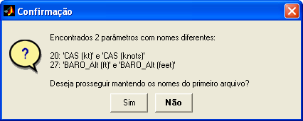
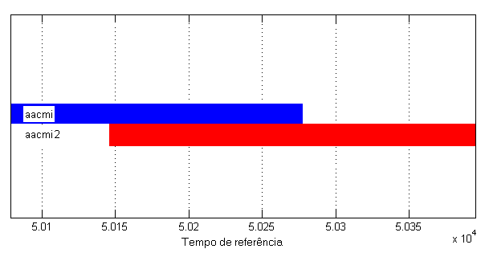
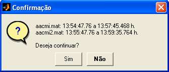

| Menu Arquivo |
  |
Concatenar
Arquivo mat
Essa operação
permite acrescentar ao arquivo aberto outro(s)
arquivo(s) mat que
tenha(m) a mesma lista de parâmetros.
Clique no menu “Arquivo ► Concatenar arquivo mat” ou no botão na Barra de Ferramentas, localize o arquivo mat a ser concatenado e clique “Abrir”.
A operação se repetirá continuamente, permitindo concatenar vários arquivos, até que o usuário clique "Cancelar". Não é possível concatenar arquivos mat compactados (zip).
Para o correto
carregamento, o conteúdo do
arquivo a ser concatenado deve seguir um padrão de armazenamento
reconhecido pelo R_DAT.
A operação de
concatenação pressupõe que os conjuntos de
dados sejam complementares, ou seja, que as listas de parâmetros dos
dois
arquivos sejam iguais. Dessa forma, o R_DAT compara as matrizes PARAM
dos dois
arquivos e avisa ao usuário caso encontre alguma discrepância entre os
nomes
dos parâmetros dos dois arquivos:

Mesmo com
discrepâncias entre as listas de parâmetros, o
usuário tem a opção de prosseguir na operação. Nesse caso, serão
mantidos os
nomes do primeiro arquivo.
Caso o número
de parâmetros seja diferente em cada arquivo,
a operação não poderá ser realizada.
Após comparar
as listas de parâmetros, O R_DAT questionará o
usuário sobre o tipo de concatenação desejada:
Os dois tipos
de concatenação possíveis são:
Concatenação
Simples
Essa operação
apenas concatena verticalmente as matrizes,
colocando a segunda embaixo da primeira. O usuário tem ainda a opção de
inserir
uma linha de valores inválidos (NaN)
entre as matrizes, de forma a separar graficamente o espaço entre elas
(espaço
em branco nos plotes).
Concatenação
no Tempo
Essa operação
utiliza um parâmetro de tempo como referência
para a concatenação. Nesse caso, cada linha da matriz de dados do
segundo
arquivo é inserida em posição cronológica na matriz atual.
O tempo de
referência deve ser o mesmo em ambos os arquivos,
e é informado pelo usuário:
O R_DAT irá
primeiramente verificar se o parâmetro de tempo
informado é adequado (monotônico crescente e sem pontos inválidos).
Caso afirmativo,
será apresentada a distribuição dos dados de cada matriz no tempo. Caso
o tempo
não seja adequado (com ruído, por exemplo), a operação não poderá ser
realizada.

Antes da
confirmação, serão informados os intervalos de
tempo (início e fim) de cada matriz:

Caso parte do
segundo intervalo se sobreponha os primeiro
intervalo, o usuário poderá eliminar o trecho repetido do segundo
intervalo.
Nesse caso, a concatenação será semelhante à opção anterior
(concatenação
simples), com a diferença de que o posicionamento da segunda matriz
será de
acordo com o tempo de referência, e não necessariamente embaixo da
primeira.
Caso não haja sobreposição, o usuário terá ainda a opção de inserir uma
linha
de NaNs para separar graficamente os intervalos.
Após a
concatenação, caso sejam encontrados instantes de
tempo repetidos (mesmo instante em ambos os arquivos), o usuário terá a
opção
de eliminá-los, mantendo apenas as observações do primeiro arquivo:
Serão mantidas
as matrizes auxiliares e a lista de eventos e pontos de ensaio do
arquivo 1.
Após o término da operação, o R_DAT atualizará a matriz DADOS.
| |
Importar
dados |
Incorporar
arquivo |
|